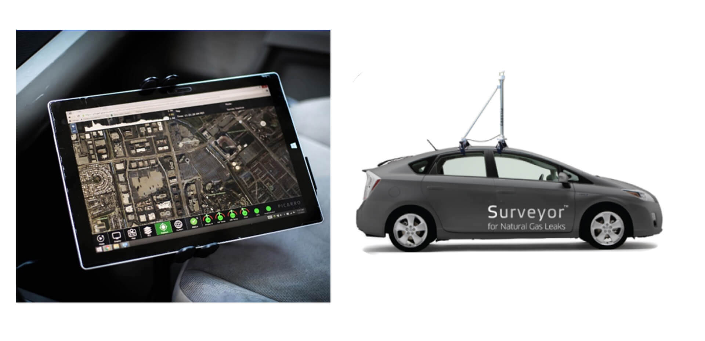

Smart_City_Dashboard
Business Driver:
- Multiple IOT Sensors and independent systems
- Not able to view collaborative details for business decisions
- Not able to visualize the information based on the City Zones and Communities
Solution:
- Built comprehensive and centralized analytics platform for Smart Cities
- Real-time analytics for environmental monitoring, traffic monitoring & control, safety and security monitoring, utilities capacity and consumption reporting, and interactive citizens dashboard
Value Proposition:
- Enhance decision making
- Easy to monitor Smart City KPI, Access to right information
Technology:
- Google Dialog flow, Tensor flow, Portal for ArcGIS, Microsoft .NET, Operations Dashboard, WEB GIS API
Drone to Map
Business Driver:
- Not able to visualize the real project progress on the ground
- Management relay on the pictures and progress reports
- Taking long time to get the consolidated details about each project
Solution:
- Built project monitoring dashboard by integrating with GIS Maps Collected by Drone Images, Financial system, Project Management System
- Provide consolidated location mapping view along with Project Progress, Payment status, stakeholder details, Schedules, On time or Delays
Value Proposition:
- Save lot of time and improve decision making power
- Take preventive measures based on the project progress
- Easy to access information
Technology:
- ESRI ArcGIS Online, Microsoft .NET, Integration Component
Location Analytics Survey or Leak Detection (iOT)

Business Driver:
- To perform advanced Gas Asset Management through Predictive Data Analytics, customer wants to collect and assess Methane data that gives a much richer view of gas assets in real-time
Solution:
- A Leak Detection system is built using location analysis by deploying ESRI ArcGIS Portal Environment which established seamless collaboration with Customers sharing ESRI Platform.A unified, real-time picture of asset data is developed for accurate forecasting of projected leak survey and repair requirements
- New analytics dataset update: Python based script to run on a scheduled task, to pull the transactional database update. Cubed database
- Picarro GIS Portal to Customer GIS Portal Collaboration: This integration is done between two common Portal groups
Value Proposition:
- Transform traditional leak survey and repair protocols and benefit from business process automation
- Provides actionable insights to solve high value operations and business objectives
- Highly valuable perspective on the health and safety of gas asset infrastructure
Technology:
- ESRI ArcGIS Enterprise, Microsoft .NET, iOT Integration
Live Command Control Center for Police
Business Driver:
- The Police Department uses three different systems to perform crime analysis
- Taking long time to find the root cause analysis
- No location analytics solution in the application
Solution:
- Build Centralized Geo-enabled dashboard
- Present the data integrating with
- Video Management System
- Incident Management System
- Vehicle Monitoring System
- Weather iOT System
- Fire Safety System
Value Proposition:
- Reduce time for Crime Analysis
- Improved accuracy of analysis
Technology:
- Google AI – Tensor flow, ESRI ArcGIS Enterprise, Microsoft .NET, iOT-Integration Component
Enterprise GIS System for Food Control Authority
Business Driver:
- Challenge in locating and analyzing the business facilities like Animal holdings, Clinics, Food establishments & Reserves, irrigation network
- Difficulty managing field workforce management
- Management not able to visualize the location based business information
Video: https://youtu.be/VGTKl6nCLkQ
Solution:
- Built Enterprise GIS System and mapped all the facilities locations and linked with business data
- Food Storage Facilities Management
- Food Inspection Planning Management
- Agriculture and Irrigation Facilities
- Water Well Management
- Field Data Collection
- Geo Enabled KPI Dashboard
Value Proposition:
- Higher productivity with Improved customer satisfaction
- Reduced turn around time for inspection and planning
Technology:
- ESRI ArcGIS Enterprise, Portal for ArcGIS, Microsoft .NET, Operations Dashboard
Geo Analytics - Animal Holding Inspection Management
Business Driver:
- Field users not able to identify animal holdings and associated clinics
- Taking long time for doing the each animal holding, slater houses and associated facilities
Solution:
- Integrated Geo enabled dashboard for performing analysis on clinic, Customer Services, Farmer Services, Hay Center. This dashboard updates dynamically based on the map extent or based on user selected location with defined buffer distance
- This helps the management for analyzing the facilities details at different zones and sectors
- Build All map navigation and search for facilities functions
Value Proposition:
- Increase the operational efficiency
- Can do the assessment from the office
- Easily plan the field inspection activities form office
Technology:
- ESRI ArcGIS Enterprise, Microsoft .NET, Integration Component